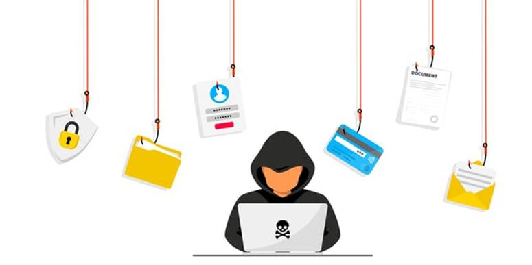
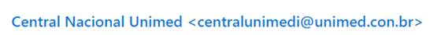
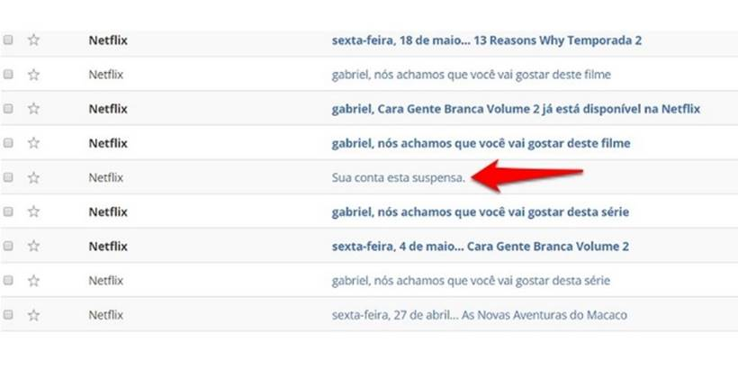
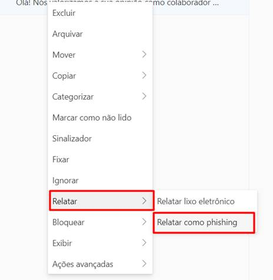

ATENCÃO
VOCÊ CAIU EM NOSSO TREINAMENTO ANTI-PHISHING
Não comente com seu amigo sobre o teste
Abaixo, informações sobre a importância dos cuidados em abrir e-mails externos.
Os ataques de phishing é uma preocupação importante para pequenas empresas e organizações de médio porte. Na verdade, 83% das empresas afirmam ter sido vítimas de um ataque de phishing apenas no ultimo ano. Isso não é uma surpresa. Afinal, esses ataques são de simples execução e especialmente rentáveis quando bem-sucedidos.

Phishing é o crime de enganar as pessoas para que compartilhem informações confidenciais como senhas e número de cartões de crédito. Como em uma verdadeira pescaria, há mais de uma maneira fisgar uma vítima, mas uma tática mais comum. As vítimas recebem um e-mail ou uma mensagem de texto que imita uma pessoa ou organização em que confiam, como um colega de trabalho, um banco ou um órgão governamental. Quando a vítima abre o e-mail ou o texto, eles encontram uma mensagem assustadora que induz a deixar o bom senso de lado ao deixá-los com medo. A mensagem exige que a vítima acesse um website e execute uma ação imediata ou assuma um risco por algum tipo de consequnêcia.
Se os usuários mordem a isca e clicam no link, eles enviam uma imitação de um website legítimo. A partir daí, eles pedem para fazer o login com nome de usuário e senha. Se forem ingênuos o bastante para obedecer, as informações de acesso são enviadas aos ladrões que as usam para roubar identidades, roubam contas bancárias e vendem os dados pessoais no mercado negro.
A medida que as tecnologias evoluem, o mesmo acontece com os ataques cibernéticos. Abaixo, contém os tipos mais difundidos de phishing.
· E-mail de phishing: A forma mais comum de phishing, esse tipo de ataque usa táticas de envio de hiperlinks falsos para induzir os destinatários a compartilhar informações pessoais. Os invasores geralmente se disfarçam de grandes provedores de contas, como Microsoft ou Google, ou até mesmo colegas de trabalho.
· Phishing de malware: Esse tipo de ataque envolve a implantação de malware disfarçado de anexo confiável (como um currículo ou extrato bancário) em um e-mail. Em alguns casos, abrir um anexo de malware pode paralisar sistemas de TI inteiros.
A maioria dos ataques de phishing usam uma rede ampla, no entanto, o spear phishing é um método que visa indivíduos específicos e usa informações coletadas por meio de pesquisas sobre os empregos e vidas sociais deles para ameaçá-los. Esses ataques são altamente personalizados, o que os torna particularmente eficazes porque tem como objetivo contornar a segurança cibernética.
· Smishing: Uma combinação das palavras "SMS" e "phishing", o smishing envolve o envio de mensagens de texto disfarçadas de comunicações confiáveis. As pessoas estão mais vulneráveis aos golpes por SMS, porque as mensagens de texto são entregues em texto simples e parecem mais pessoais.
· Vishing: Nas campanhas de vishing, agentes mal-intencionados em centrais de atendimento fraudulentas tentam enganar as pessoas para que forneçam informações confidenciais por telefone. Em muitos casos, esses golpes usam engenharia social para enganar as vítimas a instalar malware nos dispositivos delas na forma de um aplicativo.
Nem sempre é fácil identificar um phishing, mas algumas dicas, um pouco de disciplina e bom senso poderão ajudar muito. Procure por algo que não seja comum ou estranho. Confie em sua intuição, mas não se deixe levar pelo medo. Geralmente, os ataques de phishing usam o medo para despistar seu julgamento.
Alguns sinais de uma tentativa de phishing:
· Atenção ao remetente: Mais da metade dos e-mails de phishing falsificam o e-mail de um remetente confiável. A primeira forma de identificar uma mensagem falsa é ficar de olho no endereço de quem envia o e-mail. Um exemplo clássico é o nome de exibição simular o da empresa, mas o domínio ser completamente diferente. Sempre fique atento a isso.
Nesse teste, inserimos um domínio incorreto:

Correto: centralunimed@unimed.com.br
· Erros de Ortografia: Antes de clicar em qualquer link no e-mail, analise o que está escrito dentro do e-mail, leia com atenção o e-mail, verifique se não há erros ortográficos, domínios desconhecidos, algo que possa identificar qualquer tentativa de fraude.
· Assunto: A ideia dos criminosos é fazer com que você abra a mensagem. Para isso, uma das principais táticas é inserir mensagens alarmistas na parte de "Assunto" do e-mail. Suspensão de conta, promoções, cobranças de dívidas e pedidos de orçamento são alguns exemplos de temas usados para atrair vítimas.

· Conhecido: Você reconhece o remetente, mas é alguém com quem você não conversa. Mesmo que o nome do remetente seja familiar, suspeite se for alguém com quem você não conversa com frequência, especialmente se o conteúdo do e-mail estiver relacionado com as responsabilidades comuns de seu trabalho. O mesmo se aplica se você estiver em cópia de um e-mail para pessoas que você nem conhece ou a um grupo de colegas de unidades de negócios estranhas.
1. Comunique a TI, de preferência, procure os analistas de Cibersegurança. Aqui, os analistas em caso de necessidade:
· Marcelo Pissinati;
· Bruno Biondo;
· Douglas Vieira
2. Poderá também denunciar o conteúdo malicioso através da ferramenta Outlook. Passo a passo abaixo:
· Clique com o botão direito em cima do e-mail;
· Clique em Relatar e em seguida, clique em "Relatar como Phishing"
